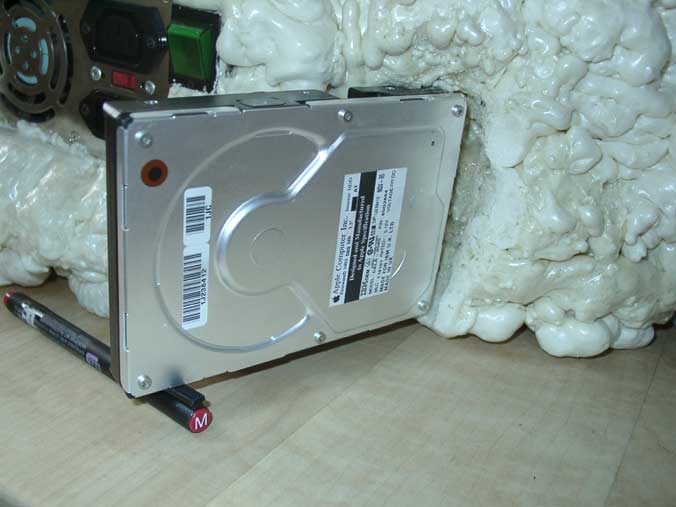

- water -
 |
Copper Water Blocks Radiator Stacking The Peltier Radiator Four Water Blocks Reviewed Radiator Shootout Big Lar to 1007 - Water Cooled Peltier Three Water Blocks Reviewed Dukes Water Cooling System Eheim 1046 In-line Water Pump Outlaw's Video Chip Cooler Recycled Heatsink Water Block Water Block Plans 2 Cool Computer Water Block CPU Water Pump Shootout Perma-Cool vs Senfu Radiators CoolChip CPU Water Jacket Senfu Water Cooler Kit AquaStealth - How To Mix Water and Silicon Radiator Alternative CPU Water Cooling Container Magnetic Drive Water Pumps Steve Foster's Water Cooled Peltier Dual CPU System CPU Water Cooling FAQs CPU Water Cooling Sources Water Jacket Flow Rates Erich's Water Cooler AquaStealth Rear Mount document. . Water Cooling De-Mistified DIY Radiators Water Cooling - Two Short Stories Cool Computers Copper Waterblock Overclocker's Hideout Slot 1 Waterblock Bevy of Blocks Tidal Pool CPU Waterblock Surly Joe's Beehive Water Cooler Swiftech MCW2000 Water Block Peltier Radiator Formula Tim Whitaker's Plastic Water Block Plastic vs. Copper Water Blocks Radiator Stacking The Peltier Radiator Four Water Blocks Reviewed Radiator Shootout Big Lar to 1007 - Water Cooled Peltier Three Water Blocks Reviewed Dukes Water Cooling System Eheim 1046 In-line Water Pump Outlaw's Video Chip Cooler Recycled Heatsink Water Block Water Block Plans 2 Cool Computer Water Block CPU Water Pump Shootout Perma-Cool vs Senfu Radiators CoolChip CPU Water Jacket Senfu Water Cooler Kit AquaStealth - How To Mix Water and Silicon Radiator Alternative CPU Water Cooling Container Magnetic Drive Water Pumps Steve Foster's Water Cooled Peltier Dual CPU System CPU Water Cooling FAQs CPU Water Cooling Sources Water Jacket Flow Rates Erich's Water Cooler AquaStealth Rear Mount document. . |
|
Cooling with fresh water eliminates the sinking hazard and corrosion that sea raw water brings, and the basically room temperature cooling water of these systems eliminates the need to insulate the water lines, greatly reducing your installation expense in labor and material. . Now you can benefit from the numerous advantages of self-contained systems without pumping sea water throughout your vessel. With a flooded system you eliminate the head pressure from distances ADWL - only frictional losses need to be considered, which is ideal for multi-level applications and installations well above the water line, such as large ships and oil rigs. You can eliminate the heat exchanger and raw water pump depicted below by using a keel cooler - our staff will assist you in deciding what system best suits your needs. |
|
Often summer head can cause fish kills in ponds because high temperatures reduce available oxygen in the water. . Temperature Water Quality Information Water Temperature High water temperatures stress aquatic ecosystems by reducing the ability of water to hold essential dissolved gasses like oxygen. Temperature Testing Equipment (Thermometers) Back to Parameters List Why Temperature Is Important Human activities should not change water temperatures beyond natural seasonal fluctuations. Good temperatures are dependent on the type of stream you are monitoring. |
|  |
. Many thermal pollution problems are a result of anthropogenic activities (see "sources"). However, some water quality problems occur because of natural temperature fluctuations. The following information is provided to explain why temperature affects water quality and how anthropogenic activities may enhance the negative effects of natural temperature changes. First, water possesses many important thermal qualities. |
A good water site: http://www.watertestinglabs.com